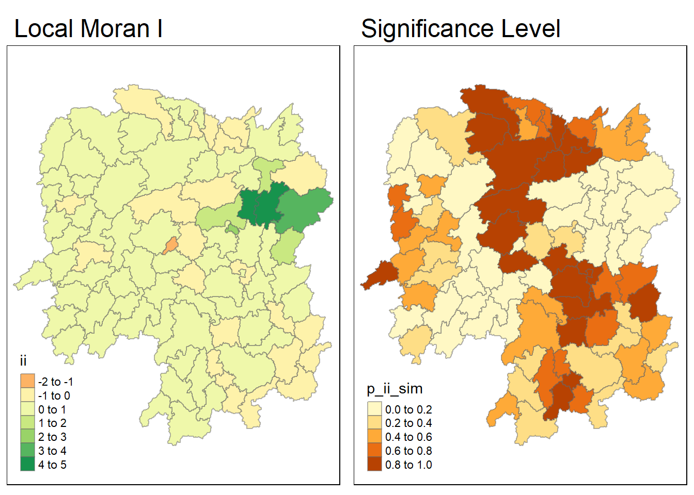
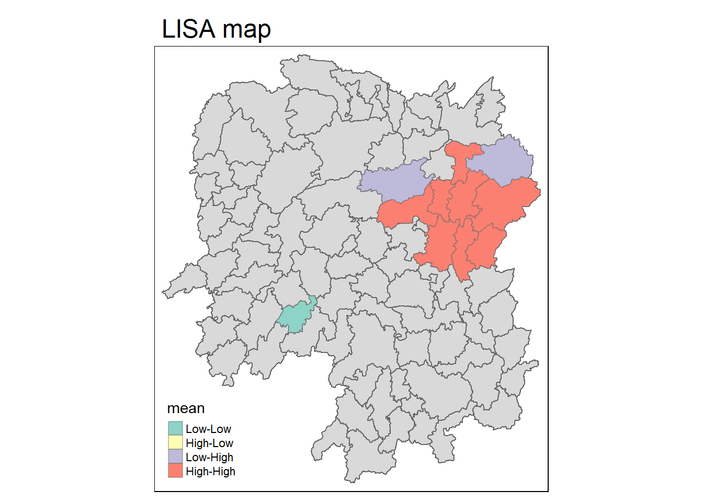
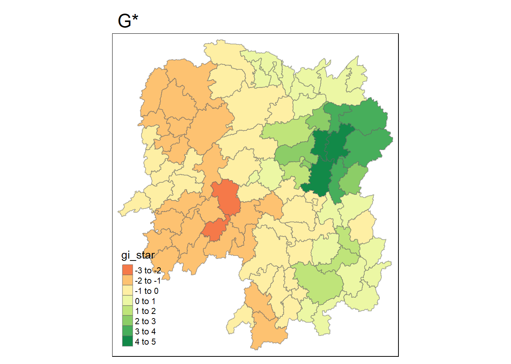
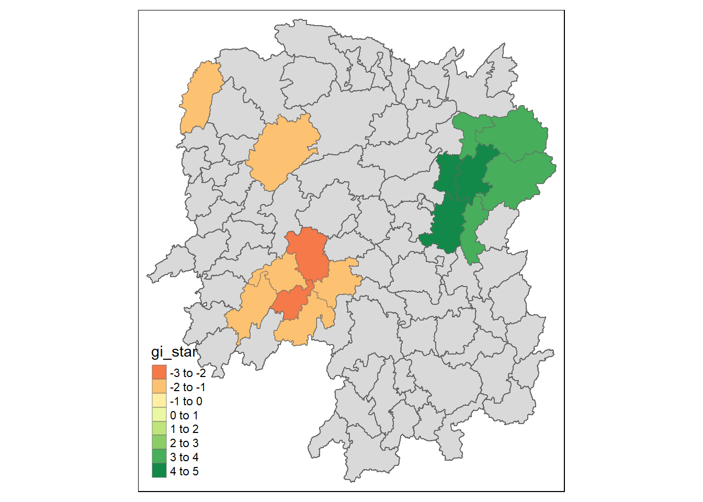

pacman::p_load(sfdep, tidyverse, sf, tmap)In-class 6
Lesson 6: Global and Local Measures of Spatial Autocorrelation
Basically just checking if distributions are random, whether they are considered outliers.
Near things are more related than distant things - spatital dependence and spatial autocorrelation
Spatial Dependency - Relationship of variables, statistical dependence
Spatial Autocorrelation - Term used to describe the presence of systematic spatial variation, used for clustering pm. Can be across continuous surface, fixed sites or areas.
Positive Spatial Autocorrelation: There is a correlation, neighbors are similar. Usually apparent in clustering (Correlation Co-Efficient)
Negative Spatial Autocorrelation: Checkerbox patterns, “opposite” of clustering, neighbours are all dissimiliar, More dissimilar than a random output.
Moran I
Moran I, Z-Value. Describe how features differ from the values in the study area as a whole.
| + - Clustered | - - Dispersed | 0 - Random |
Geary C
Geary C, Z-Value. Describes how features differ from their immediate neighbours.
| >1 - Dispersed | <1 - Clustered | 1 - Random |
Z-Score and P-Values
Alpha value of 0.05, Null Hypothesis, lots of rambling about data timeliness and confidence levels/intervals.
Getis-Ord Global G
Overall concentration or lack of concentration in all pairs that are neighbours. The variable only takes postitive values. Cluster Detection.
Local Spatial Autocorrelation Statistics
Collection of geospatial statistical analysis methods to find location related tendency
LISA - Local Indicator of Spatial Association
Given a set of features and analysis field, the spatial statistics identify spatial clusters of features with high or low values. It also identifies spatial outliers.
High-High | High-Low | Low-High | Low-Low
Morans Local I
Do this for the first step, its Moran’s I, but local. You can then find their p-value to check if the correlation is statistically significant.
Hot and Cold Spots - High Clusters and Low Clusters
Only use the significant ones.
Break
Course Announcements
Take-Home Task 2 is due next week Sunday
Theres still more slides at the end to do :(
Its based off thailand
No Hands-On Excersise this week or next week
In-Class
sfdep package: list columns to make an interface
hunan <- st_read(dsn = "data/6data/data/geospatial",
layer = "Hunan")Reading layer `Hunan' from data source
`C:\Users\thevi\OneDrive\Desktop\IS415\IS415\inclass\data\6data\data\geospatial'
using driver `ESRI Shapefile'
Simple feature collection with 88 features and 7 fields
Geometry type: POLYGON
Dimension: XY
Bounding box: xmin: 108.7831 ymin: 24.6342 xmax: 114.2544 ymax: 30.12812
Geodetic CRS: WGS 84hunan2012 <- read_csv("data/6data/data/aspatial/Hunan_2012.csv")
hunan_GDP <- left_join(hunan,hunan2012) %>%
select(1:4, 7, 15)Deriving Queens contiguity weights with sfdep methods
st_weights() has three arguments
nb: neighbour list objects
style: W for row standardized weights, C globally standardised, U is C / n, S is variance-stabilised
allow_zero: if true, assigns zero as lagged value to zone without neighbours
wm_q <- hunan_GDP %>%
mutate(nb = st_contiguity(geometry),
wt = st_weights(nb,
style="W"),
.before = 1)
#.before puts the column at the front, not the back :) This adds a column with the neighbors for each row. c(2,3,4) = row 1 is n with 2,3,4
Computing Global Moran I
Calculate the Global Moran I, the output is a tibble data.frame. You don’t normally do this in examples, more of a test :)
moranI <- global_moran(wm_q$GDPPC,
wm_q$nb,
wm_q$wt)
glimpse(moranI)List of 2
$ I: num 0.301
$ K: num 7.64K is average neighbors found, I is the thing 😍
Performing Global Moran’s I Test
This is the thing you want to run, instead of computing the stats, you want to perform a test with them. use global_moran_test as shown below.
global_moran_test(wm_q$GDPPC, wm_q$nb, wm_q$wt)
Moran I test under randomisation
data: x
weights: listw
Moran I statistic standard deviate = 4.7351, p-value = 1.095e-06
alternative hypothesis: greater
sample estimates:
Moran I statistic Expectation Variance
0.300749970 -0.011494253 0.004348351 ^ Do analysis stuff’s on this
Make sure your p-value is low enough (smaller than confidence level at 0.05)
THEN use the Moran I statistic to draw conclusions
Permutation Test
Monte Carlo should be used to run the simulation. Its supported by sfdep :). You can basically start from this step.
# Set a seed for reproducibility
set.seed(1234)Very Similar to the other test but using global_moran_perm and adding the nsim, which is set to 99 for how many times its going to be run through.
global_moran_perm(wm_q$GDPPC,
wm_q$nb,
wm_q$wt,
nsim = 99)
Monte-Carlo simulation of Moran I
data: x
weights: listw
number of simulations + 1: 100
statistic = 0.30075, observed rank = 100, p-value < 2.2e-16
alternative hypothesis: two.sidedMoran I, statistic is roughly the same, which proves that its stable. We know this because we ran it 100 times 😍
Computing Local Moran’s I
Here we compute the local Moran’s I of GDPPC at county level by using the local_moran sfdep package.
lisa <- wm_q %>%
mutate(local_moran = local_moran(
GDPPC, nb, wt, nsim = 99),
.before = 1) %>%
unnest(local_moran)This creates the lisa data.frame, with lots of helpful statistics, including what region is categorized as (HIGH/HIGH, p, var…..)
Lots of p values in this df, It’s reccomended that you stick with the same one. (Use p_ii_sim, this will make it the same as your simulation)
With the HIGH/LOW columns, the mean and media ones are the important ones.
Skewness can help you decide - high skew means you pick median
Visualising local Morans I
tmap_mode("plot")
map1 <- tm_shape(lisa)+
tm_fill("ii")+
tm_borders(alpha = 0.5)+
tm_layout(main.title = "Local Moran I")
# tm_view(set.zoom.limits = c(6,8))
# tm_layout
#main.title
# main.title.size
# This needs to be assigned labels
map2 <- tm_shape(lisa) +
tm_fill("p_ii_sim")+ #,
# breaks = This is where you set your sign level legend
# label) +
tm_borders(alpha = 0.5) +
tm_layout(main.title = "Significance Level")
tmap_arrange(map1, map2, ncol = 2)
Lisa Map Visualization
The LISA Map Visualization is a combination of the p significance level and local moran I, it will graph the Moran correlations when the significance meets its required level (null hypothesis)
lisa_sig <- lisa %>%
filter(p_ii < 0.05)
tm_shape(lisa)+
tm_polygons()+
tm_borders(alpha=0.5)+
tm_shape(lisa_sig) +
tm_fill("mean")+
tm_borders(alpha=0.4)+
tm_layout(main.title = "LISA map")
Hot and Cold Spot Analysis
Computing Local G* statistics (One with and without asterix)
This is in the same format as the Local Moran I statistics
wm_idw <- hunan_GDP %>%
mutate(nb = st_contiguity(geometry),
wts = st_inverse_distance(nb, geometry,
scale = 1,
alpha = 1),
.before = 1)Similar process to LISA/Moran I stat creation
set.seed(1234)
HCSA <- wm_idw %>%
mutate(local_Gi = local_gstar_perm(
GDPPC, nb, wt, nsim = 99),
.before = 1) %>%
unnest(local_Gi)
HCSASimple feature collection with 88 features and 18 fields
Geometry type: POLYGON
Dimension: XY
Bounding box: xmin: 108.7831 ymin: 24.6342 xmax: 114.2544 ymax: 30.12812
Geodetic CRS: WGS 84
# A tibble: 88 × 19
gi_star cluster e_gi var_gi std_dev p_value p_sim p_folded_sim skewness
<dbl> <fct> <dbl> <dbl> <dbl> <dbl> <dbl> <dbl> <dbl>
1 0.0416 Low 0.0111 0.00000788 0.125 9.00e-1 0.86 0.43 1.74
2 -0.333 Low 0.0114 0.00000955 -0.296 7.67e-1 0.98 0.49 1.02
3 0.281 High 0.0123 0.00000929 -0.0176 9.86e-1 0.7 0.35 1.19
4 0.411 High 0.0112 0.00000942 0.453 6.51e-1 0.42 0.21 1.51
5 0.387 High 0.0113 0.00000816 0.434 6.65e-1 0.58 0.29 1.10
6 -0.368 High 0.0114 0.00000714 -0.384 7.01e-1 0.92 0.46 1.18
7 3.56 High 0.0144 0.00000565 3.25 1.15e-3 0.02 0.01 0.905
8 2.52 High 0.0135 0.00000457 1.79 7.30e-2 0.14 0.07 0.629
9 4.56 High 0.0143 0.00000404 4.29 1.77e-5 0.02 0.01 0.700
10 1.16 Low 0.0106 0.00000472 1.53 1.25e-1 0.18 0.09 0.499
# ℹ 78 more rows
# ℹ 10 more variables: kurtosis <dbl>, nb <nb>, wts <list>, NAME_2 <chr>,
# ID_3 <int>, NAME_3 <chr>, ENGTYPE_3 <chr>, County <chr>, GDPPC <dbl>,
# geometry <POLYGON [°]>Visualisation
tm_shape(HCSA)+
tm_fill("gi_star")+
tm_borders(alpha=0.5)+
tm_layout(main.title = "G*")
HCSA_sig <- HCSA %>%
filter(p_sim < 0.05)
tm_shape(HCSA)+
tm_polygons()+
tm_borders(alpha=0.5)+
tm_shape(HCSA_sig)+
tm_fill("gi_star")+
tm_borders(alpha=0.4)